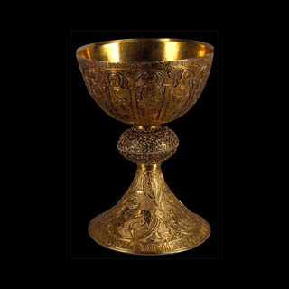

Cálice
Séc. XII MNMC 6030
Séc. XII MNMC 6030
Séc. XII MNMC 6031
Séc. XIII-XVI MNMC 6033
Séc. XIV MNMC 6034
Séc. XIV MNMC 6035
Séc. XIV MNMC 6036
Séc. XIV MNMC 6040
Séc. XIV - XVI MNMC 6076
Séc. XV MNMC 6077
Séc. XV MNMC 6078
1500 - 1520 MNMC 6082
1527 MNMC 6091
1520 - 1540 MNMC 6092
1520 - 1540 MNMC 6092A
Séc. XVI MNMC 6093
Séc. XVI MNMC 6095
Séc. XVI MNMC 6121
Séc. XVII MNMC 6510
Séc. XVI MNMC 6210
Séc. XVII MNMC 6211
Séc. XVII MNMC 6505
Séc. XVII MNMC 6133
Séc. XVIII MNMC 6598
Séc. XVIII MNMC 6863
Séc. XVIII MNMC 6584